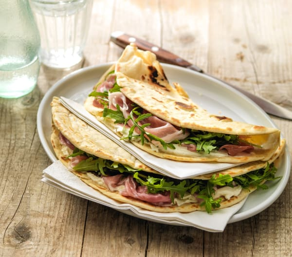

Piada

Description:
It is the queen of Italian street food and is loved by millions of people
all over
the world: we are talking about the piadina romagnola, a poor recipe with
ancient origins, which lends itself to being filled with any ingredient
your
imagination suggests.
From the more traditional such as crudo, rucola and squacquerone, to the
more
innovative such as hummus, tofu or chicken salad, the result will always
be super appetizing!
Ingredients
- Flour 00 => 500g;
- Lard => 125g (optional);
- Water => 170g;
- Salt up to => 15g;
- Bicarbonate => 1,5 teaspoons
Steps
-
Prepare the dough by mixing the flour, salt, lard and bicarbonate in a
bowl.
- Start kneading and add water in 3 times.
-
Transfer the dough to the worktop and continue to knead until a
homogeneous dough is obtained.
-
Shape into a ball, wrap in a food bag and let it rest for 30 minutes.
-
After the rest time, remove the dough from the bag and form a sausage.
Then divide it into 6 equal portions.
-
Give the shape of a ball to each portion of dough by kneading it for
about 30 seconds, so that it becomes smooth and uniform.
Then wrap them again with a food bag and let them rest for another 30
minutes.
-
After the rest time, flour the worktop and roll out the balls with a
rolling pin up to a thickness of 2-3 mm.
-
Heat a plate
(piastra)
and wait for it to warm up.
-
Cook the wraps on one side for 2 minutes, rotating them continuously
with one hand to ensure a uniform cooking, then turn them
and cook them for 2 minutes on the other side until they turn slightly
golden.